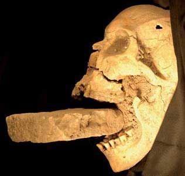
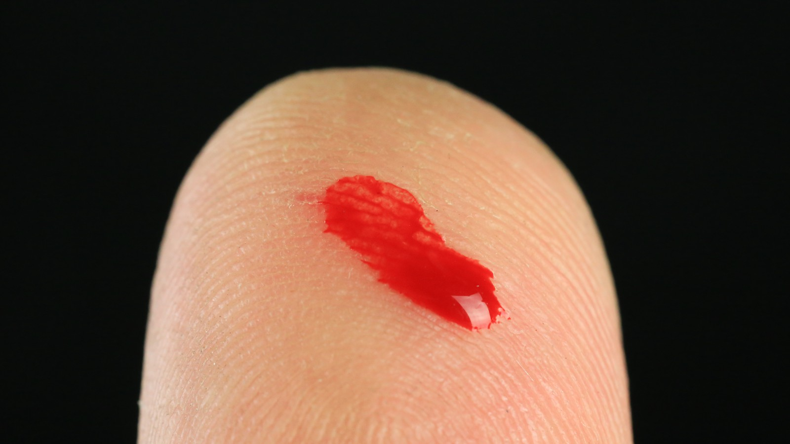
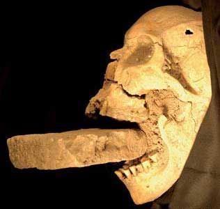
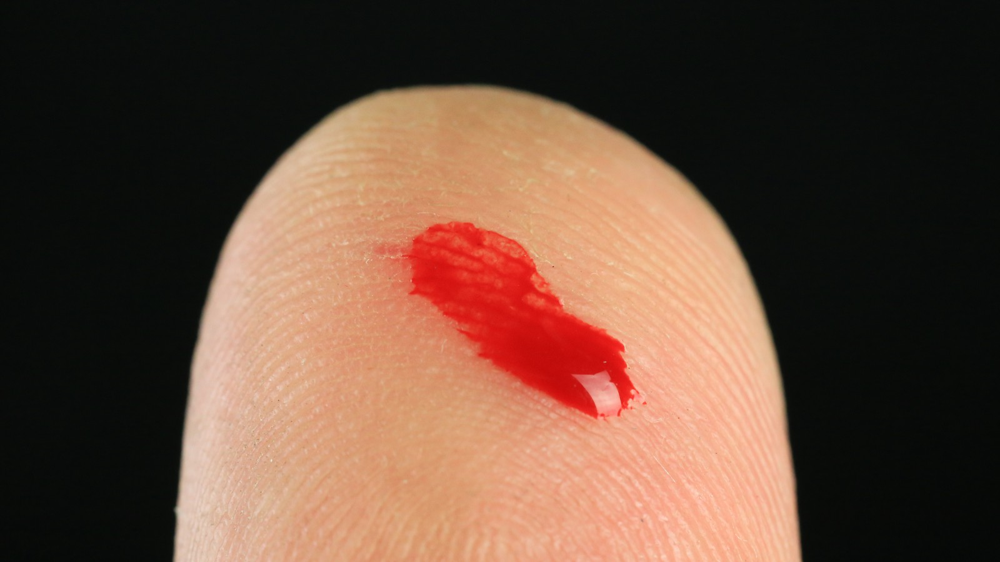

Published By: Taruja Pathmarajah on October 13, 2021
 



Vampires are one of the best around Halloween, but they can be found all year in movies, on the tv, in books and on blogs. The public's passion for vampires seems as immortal as vampires' thirst for blood. Although, the major question everyone has been wanting to know is whether vampires are real or just part of our imagination.So how do we protect ourselves against vampires when we aren't sure if they’re real? Well, history has it that vampires are indeed real! According to original vampire mythology, every vampire was once a human. The transition happens after being bitten by a vampire and dying in less than 24 hours. After the body is buried, the body awakens as a vampire who needs to feed off human blood to survive. Vampires crave the blood of the living and hunt best at night. Read the rest of the article to learn more about vampire folklore.
Nobody knows when the first vampiric figures appeared, but tales about them stretch back at least 4,000 years, to the Assyrians and Babylonians of Mesopotamia. Lamastu (sometimes written Lamashtu), a cruel demon goddess who preyed on mankind, was feared by Mesopotamians. Lamastu, the daughter of the sky god Anu, would break into a house at night and take or kill newborns, either in their cribs or in the womb, according to Assyrian folklore. Believers linked miscarriage and sudden infant death syndrome to this number. Lamastu, which means "she who erases," preyed on adults as well, draining the blood of young males and infecting them with illness, sterility, and nightmares.
Although modern science has calmed the vampire fears from the past, people who call themselves vampires do exist. They're normal-seeming people who drink small amounts of blood in an effort to stay healthy. Vampires tend to prey on humans generally by feeding on their blood. Some vampires don't ingest human blood but claim to feed off the energy of others. Many vampires state that if they don't feed regularly, they become agitated or depressed. In general, vampires hunt at night since sunlight weakens their powers. Some may have the ability to transform into a bat or a wolf. Vampires additionally have super strength such as a hypnotic effect on their victims. Although vampires largely became famous creatures in the 20th century, urban myths about vampires persisted. Until the early 20th century, some villages in Bulgaria still practiced corpse impalement. In the 1960s and 1970s, a vampire is said to haunt London's Highgate Cemetery, and by the early 21st century, rumors of vampires were still causing commotion in Malawi and England.
Creatures with vampire characteristics have been around since at least ancient Greece, where stories were told of creatures that attacked humans in their sleep and drained their blood. Stories of roving corpses drinking the blood of the living and spreading plagues flourished in medieval Europe during the time of sickness, and those lacking modern understanding of infectious diseases have come to believe that who became the first vampire to attack their family. Research in the 20th and 21st centuries has recognized that the traits related to vampires can be specified to certain diseases such as porphyria that make them sensitive to sunlight; tuberculosis, which causes emaciation; pellagra, a disease that thins the skin; and rabies, which cause bites and general sensitization, which can lead to light or garlic repellency. A person may become a vampire in a variety of ways, however, the most common is to be bitten by one. Other methods include sorcery, committing suicide, contagion, or having a cat jump over a person’s corpse. However, Henry, a potential vampire, states that when a person becomes a vampire, they feel very tired and inactive often after puberty. When this occurs, eventually they come in contact with blood, if the child consumes any type of blood, it is told that they feel better, in fact, healthy again.
Many researchers have pointed to porphyria, a blood disorder that can cause severe blisters on the skin if exposed to sunlight, as a disease that may have been linked to the vampire legend. According to vampire folklore, vampires do not have a reflection. Therefore, you also won't see them through the camera. However, pale skin, fangs and red glowing eyes are all attributes of a vampire. When someone is injured, make sure to find out if their focus is more on the injured person or on their blood. Other strategies include noticing small details about the suspect. For instance, A vampire's skin is slightly colder than the average human body temperature. By touching their skin casually, you can find out. Their house will always be kept dark, with the curtains closed, they do not appreciate light in any form in their surroundings. This trait is common in almost all vampires because coming in contact with sunlight could potentially kill them. A very frequent characteristic in vampires is their ability to easily smell blood. As the blood of a person leaves their body, vampires can immediately sense it and will definitely get very excited and be possessive of the spilt blood.
In Europe, specifically since the Medieval Times, the sacred objects of Christianity, usually the crucifix, the Eucharistic host and holy water, are known to be the effective strategies of protection. Vampires were identified with the devil's kingdom, and Satan and his servants could not exist in the presence of the saint. Simple priests, who were also sinners, were not considered entirely holy, while the cross and the Eucharistic host symbolized the presence of God Himself. In Latin American countries, sacred pendants on necklaces were given to children to protect them against evil. In Eastern countries, a holy image had the same sacred value as a crucifix. Although vampires usually do not die of disease or other normal human deaths because of their faster-than-normal healing capabilities, there are various methods for their destruction. The most popular of those destruction methods include a wooden stake through the heart, fire, decapitation, and exposure to sunlight. In some stories, vampires may enter a home only if they have been invited. In some traditions, the best way to stop a vampire is to carry a small bag of salt with you. If you are being chased, you need to spill the salt on the ground behind you. As the vampire would obligated to stop and count each and every grain before continuing the pursuit you have time to escape.
Real vampires don't always feed off of blood. Vampires who completely understand their condition tend to feed off more energy than blood in their victims. However, younger vampires socialize, especially with others of their species to understand and learn about themselves and their new life. Older, more experienced vampires (also called "elders") will often form houses or covens to advise younger and less experienced vampires on how to handle their condition and urges. For psychic vampires, this advice may also include instructions on various feeding methods. For instance, "contact feeding" is done by physically touching the donor and soaking up the excess energy naturally generated in high-traffic public places. Vampires have been seen and documented throughout history. The history of vampires goes further back in time than most people realize. Vampires have existed on this earth for centuries. Vampires have evolved into learning and respecting the human world as they've adjusted to their temptations and weaknesses. After all, it is time we accept them for who they are in our world too.
Click here to return to the top of the page.
For more information, visit sources